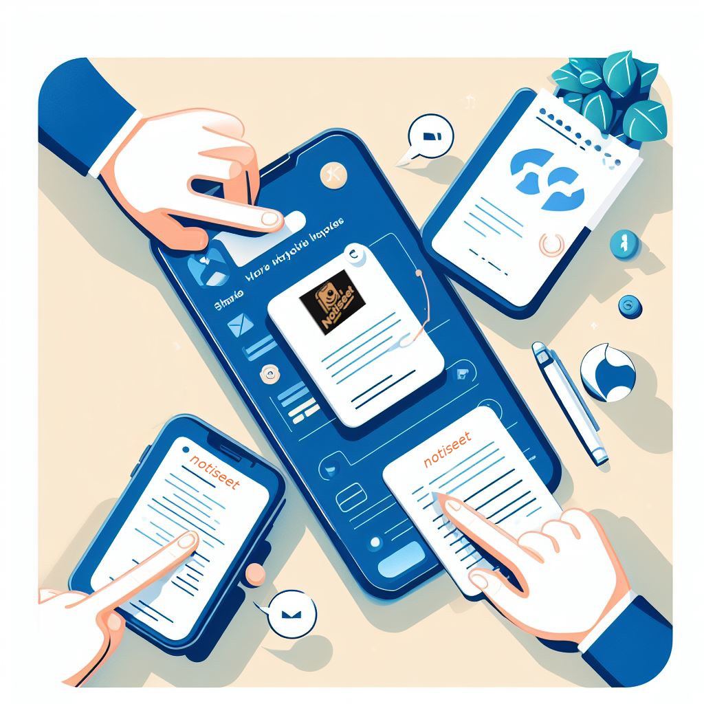

Colaboración en Tiempo Real
Permite la colaboración en tiempo real en las notas, con la capacidad de ver las ediciones de otros usuarios en tiempo real, facilitando la colaboración en proyectos y reuniones.

¡La aplicación para ordenar vuestras vidas ha llegado!
Utiliza IA para analizar el contenido de las notas y generar automáticamente un resumen conciso, facilitando la revisión rápida de la información clave.
Implementa un sistema de organización automática que utiliza algoritmos de aprendizaje automático para categorizar y etiquetar automáticamente las notas en función de su contenido.
Permite la colaboración en tiempo real en las notas, con la capacidad de ver las ediciones de otros usuarios en tiempo real, facilitando la colaboración en proyectos y reuniones.
Implementa una función que pueda analizar el contenido de las notas y generar preguntas relevantes, lo que podría ser útil para el estudio o la reflexión sobre la información capturada.
Mejora la función de búsqueda permitiendo a los usuarios buscar no solo por palabras clave, sino también por contexto, entendiendo la relación entre diferentes fragmentos de texto.
Utiliza IA para identificar tareas o acciones mencionadas en las notas y sugiere recordatorios automáticos, ayudando a los usuarios a realizar un seguimiento de sus actividades pendientes.
Integra un análisis de sentimientos para entender las emociones expresadas en las notas, proporcionando a los usuarios una visión más completa de su estado de ánimo a lo largo del tiempo.
Utiliza IA para identificar términos clave y sugerir enlaces a recursos externos relevantes, ampliando el conocimiento del usuario sobre los temas abordados en sus notas.
Permite la colaboración en tiempo real en las notas, con la capacidad de ver las ediciones de otros usuarios en tiempo real, facilitando la colaboración en proyectos y reuniones.

Integra la capacidad de traducción automática para que los usuarios puedan traducir fácilmente sus notas a diferentes idiomas, facilitando la colaboración y el intercambio de información.

*Este enlace es una prueba, no es la aplicación final*